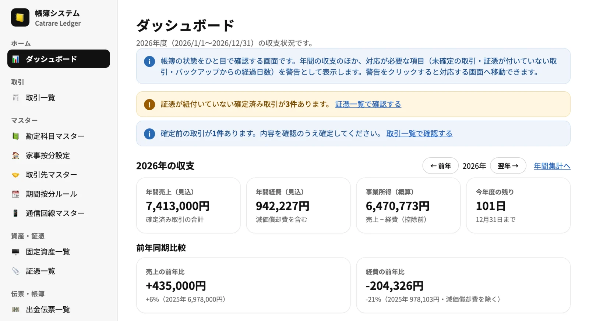
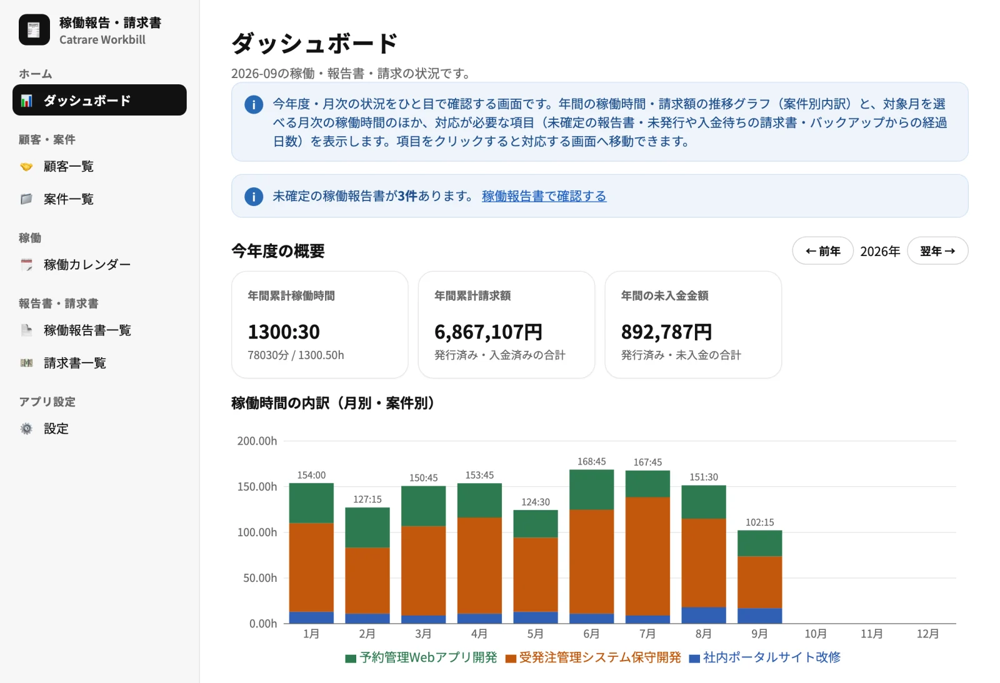

会計・帳簿管理ツール
LEDGER（帳簿システム）
日々の取引や帳簿の管理を支える、個人事業主向けのツールです。無料でブラウザから使え、データは端末内に保存されます。
カトレアテックは、業務システムの開発、既存システムの改善、データ・AIの業務活用を支援します。課題の整理から設計・実装・運用改善まで、実務に合わせて取り組みます。
新しい仕組みづくりから、今あるシステムの改善まで。状況を伺い、必要な対応を一緒に整理します。
手作業を減らしたい。業務に合うツールを作りたい。
業務の流れや必要な機能を整理し、Webシステムや業務支援ツールを設計・開発します。使い始めた後の保守や改善も見据えて実装します。
対応範囲：要件整理 / 設計 / 実装 / テスト
保守しにくい。運用負荷が高い。改修の進め方が分からない。
現在のシステムと運用を確認し、課題と優先順位を整理します。保守性や運用のしやすさを考慮しながら、必要な改修を進めます。
対応範囲：現状調査 / 課題整理 / 改善方針 / 改修
集計や確認作業を効率化したい。データを判断に使いたい。
ダッシュボードやAIを用いた業務支援ツールを、実際の作業に合わせて設計・開発します。技術の導入そのものではなく、日々の業務で使える形を重視します。
対応範囲：データ整理 / 可視化 / 業務支援ツール / 既存業務への組み込み
支援内容・期間・対応時間は、状況とご希望を伺ったうえで個別に相談します。
これまでに担当した開発・運用の一例をご紹介します。
以下は、会社員時代に担当した業務の一部です。
城野 秀峰
カトレアテック／個人事業主
2000年からソフトウェアエンジニアとして約26年、インターネットサービスのシステム開発・運用に携わってきました。社内情報システムの開発と部門運営、大規模ライブ動画配信基盤の再構築を技術リード兼マネージャーとして担当したほか、広告データの分析基盤や、生成AIを活用した業務支援ツールの開発、システム・データの構想策定支援にも取り組んできました。現在はカトレアテックとして、課題の整理から設計・実装・運用改善まで、実務に根ざした技術支援を行っています。
日々の業務や暮らしの中の課題から、自社プロダクトの開発にも取り組んでいます。

会計・帳簿管理ツール
日々の取引や帳簿の管理を支える、個人事業主向けのツールです。無料でブラウザから使え、データは端末内に保存されます。

稼働報告・請求書作成ツール
稼働内容の整理から報告書・請求書の作成までを支える、フリーランス向けのツールです。無料でブラウザから使え、データは端末内に保存されます。
自転車ライド計測
自転車ライドの走行ルート・速度・距離を記録・計測するiPhoneアプリです。計測データは端末内に保存されます。
App Store 近日公開
ジャンプアクションゲーム
iPhoneを傾けて猫を操作し、床を飛び移りながら上へ登り続ける縦スクロールのジャンプアクションゲームです。無料で遊べます（広告表示あり）。
App Store 近日公開
猫のスタンプ
ミヌエットをモデルにした、もふもふ猫のやさしい癒しスタンプを LINE STORE で販売しています。
LINE STORE は新しいタブで開きます。
システム開発や運用改善、データ・AIの業務活用について、お気軽にご相談ください。現在困っていることや、相談したい内容をお知らせください。要件が固まっていない段階でもご相談いただけます。
フォームから、相談したい内容をお知らせください。
現在の状況とご希望を確認します。
対応する内容や進め方を整理してご提示します。
内容に合意したうえで、支援を開始します。
Googleフォームが新しいタブで開きます。
個人情報の取り扱いについては、プライバシーポリシーをご確認ください。